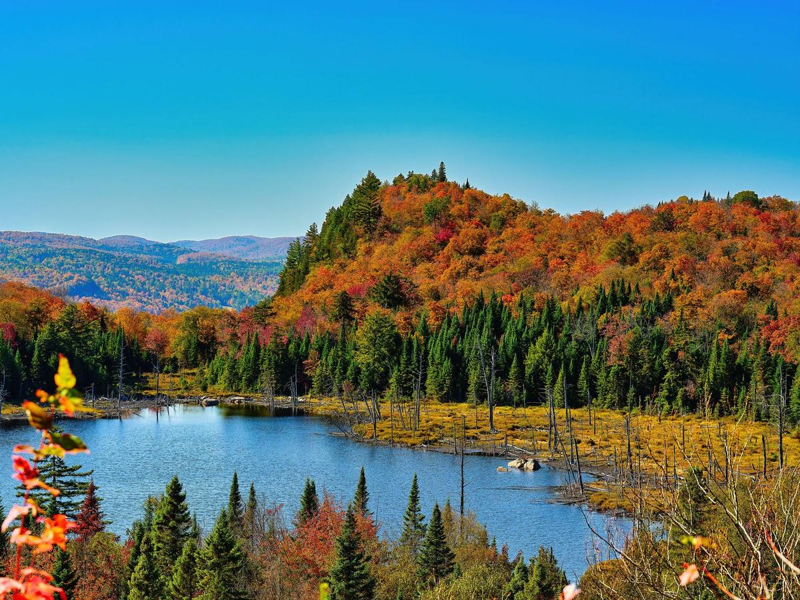

Une passerelle qui grimpe au-dessus de la forêt, jusqu'à une tour panoramique avec vue sur les montagnes des Laurentides. L'attrait se trouve à Mont-Blanc, au 737, rue de la Pisciculture (J0T 2G0).

Le parcours lumineux Lumagica revient pour un deuxième hiver du 28 novembre 2026 au 13 mars 2027, les jeudis, vendredis et samedis de 16 h à 20 h (et en continu pendant les Fêtes et les relâches) : promenade nocturne illuminée jusqu'au sommet de la tour panoramique de 40 m. Nouveauté cette année : Lumagica est inclus dans le billet régulier. L'Halloween au Sentier des cimes et l'Odyssée des couleurs sont terminés pour 2026.
Du lundi au vendredi : 9 h à 18 h
Samedi et dimanche : 8 h à 19 h
La billetterie ferme une heure avant la fermeture du sentier. Réservez vos billets en ligne avant de partir, surtout les fins de semaine.
Adulte : 33,90 $
Enfant de 6 à 17 ans : 20,90 $ · Étudiant de 18 à 25 ans : 25,90 $ · Aîné : 31,90 $
Laissez-passer familial : 63,90 $ (1 adulte et ses enfants) · 89,90 $ (2 adultes et leurs enfants)
Moins de 6 ans : gratuit
Taxes en sus. Le parcours lumineux Lumagica (présenté dès le 28 novembre) est inclus dans le billet régulier pour cette période. Ces tarifs remplacent ceux de l'Odyssée des couleurs (terminée le 18 octobre).
Combinez la visite avec les autres sorties de la région : voyez quoi faire ce week-end dans les Laurentides, la météo des Laurentides pour vous habiller en conséquence, et le prix de l'essence du jour pour le trajet.
Renseignements vérifiés le 9 novembre 2026. Sources : Sentier des cimes Laurentides (tarifs d'entrée, en vigueur du 19 octobre 2026 au 13 mars 2027 ; page Lumagica) et Tourisme Laurentides (nouveautés hiver 2026-2027).